Project 3: Image Warping and Mosaicing
This project focuses on the fundamentals of image warping and mosaicing. The goal is to take multiple photographs of a scene, align them using projective transformations (homographies), and blend them together to create a seamless panoramic image. This involves manually defining point correspondences, computing the homography matrix, warping the images into a common coordinate system, and applying a blending technique to hide the seams.
Part A.1: Shoot the Pictures
The first step was to capture source images suitable for creating a panoramic mosaic. This requires taking two or more photographs where the transformation between them is a projective one. The most common way to achieve this is to keep the camera's center of projection fixed while rotating it to capture overlapping fields of view. For this project, I took three sets of images, ensuring about 40-70% overlap between them to make the registration process easier. The scenes chosen were two different views of a backyard and one of a kitchen interior.
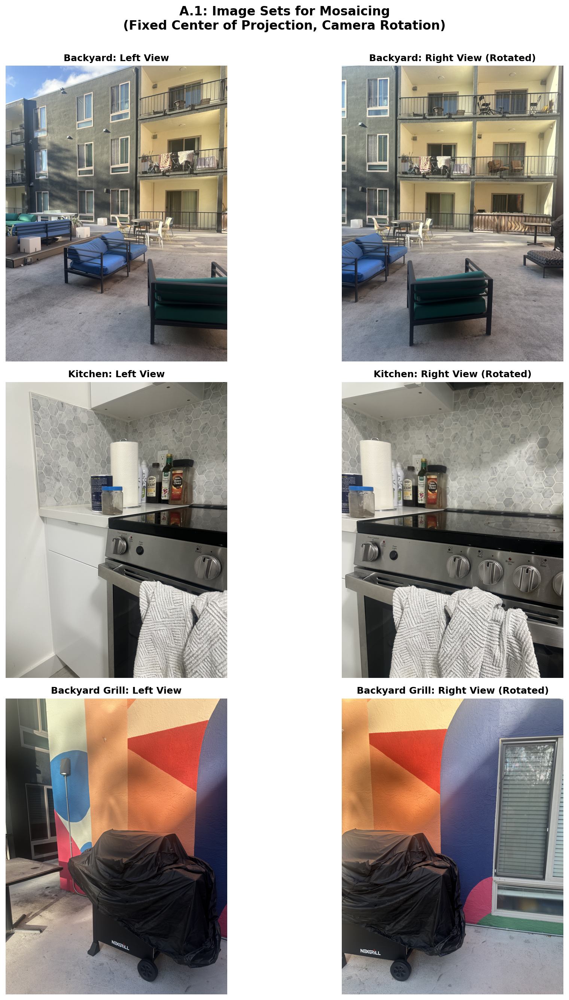
The three sets of source images for the mosaics.
Part A.2: Recover Homographies
Before the images can be stitched together, we need to compute the transformation that maps one image onto the other. For images taken from the same point of view, this transformation is a homography, a 3x3 matrix that describes a projective transformation.
The computeH Function
I implemented the function computeH(im1_pts, im2_pts) to recover the homography matrix
from
a set of corresponding points. This function takes two n by 2 matrices, where each row represents
the
(x, y) coordinates of a manually selected point in each image. With at least 4 point
correspondences, we
can solve for the 8 unknown parameters of the homography matrix.
Mathematical Formulation
The homography is defined by the equation p' = Hp, which relates a point p
in
one image to a corresponding point p' in another. By rearranging this equation, we can
set
up a homogeneous system of linear equations of the form Ah = 0, where
h is a 9-element vector containing all the entries of the homography
matrix H.
The unknown vector h is:
h = [h11, h12, h13, h21, h22, h23, h31, h32, h33]^T.
While this system can be solved using techniques like Singular Value Decomposition (SVD), a common
and
practical approach is to convert it into an inhomogeneous system. By setting the scaling factor
h33 = 1, we reduce the number of unknowns from nine to eight. This reformulates the
problem
into the form Ah = b, which can be solved efficiently using a standard
least-squares solver. This is the exact method that was implemented for this project.
For each point pair (x,y) ↔ (u,v), the system sets up two equations to solve for the 8 unknown parameters:
[ x y 1 0 0 0 -ux -uy ] [h11] [u]
[ 0 0 0 x y 1 -vx -vy ] [h12] = [v]
[h13]
[h21]
[h22]
[h23]
[h31]
[h32]
Since 10 correspondence points were used for each mosaic, this created an overdetermined system of
20
equations, which was solved using np.linalg.lstsq to find the optimal
h vector.
Correspondence Results
Mosaic 1: Backyard
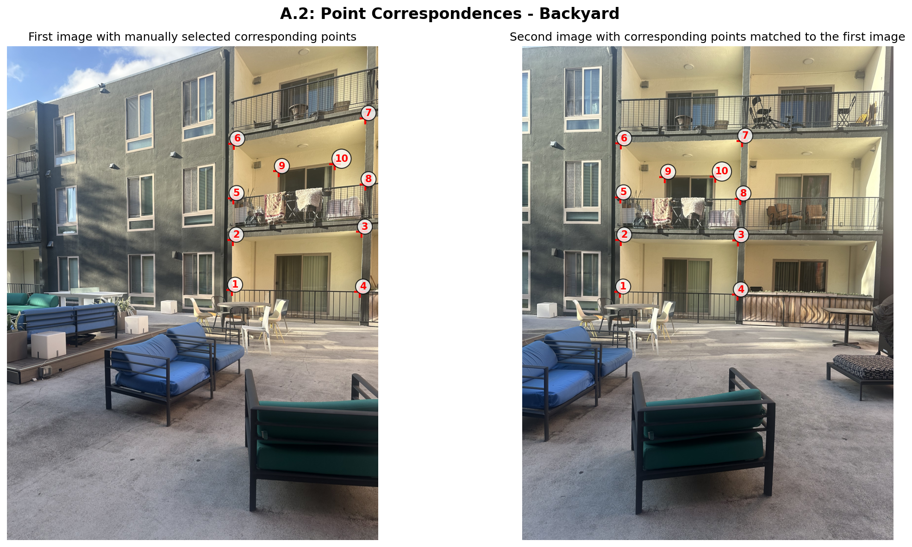
Point correspondences for the backyard scene.
Homography Matrix H₁
⎡ 1.470470e+00 -2.351720e-03 -1.671768e+03 ⎤
⎢ 3.473996e-01 1.294258e+00 -6.457900e+02 ⎥
⎣ 1.633328e-04 -7.709339e-06 1.000000e+00 ⎦Mosaic 2: Kitchen
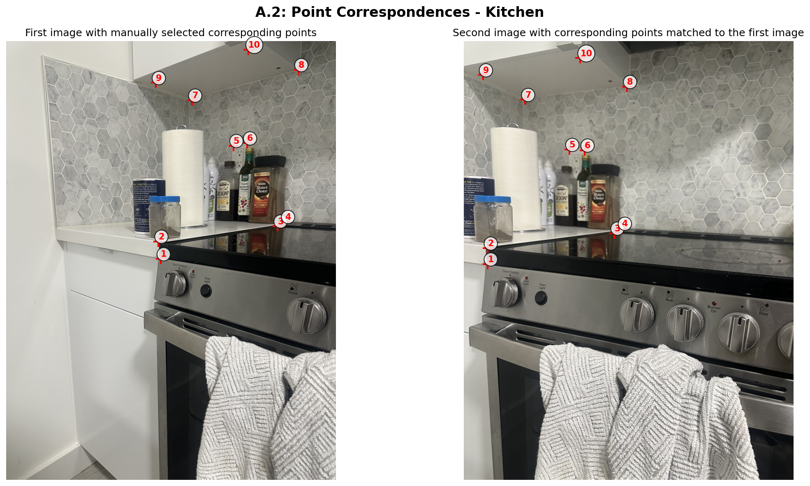
Point correspondences for the kitchen scene.
Homography Matrix H₂
⎡ 1.369051e+00 -2.022396e-03 -1.671145e+03 ⎤
⎢ 2.537873e-01 1.186942e+00 -4.432347e+02 ⎥
⎣ 1.238760e-04 -3.375904e-05 1.000000e+00 ⎦Mosaic 3: Backyard Grill
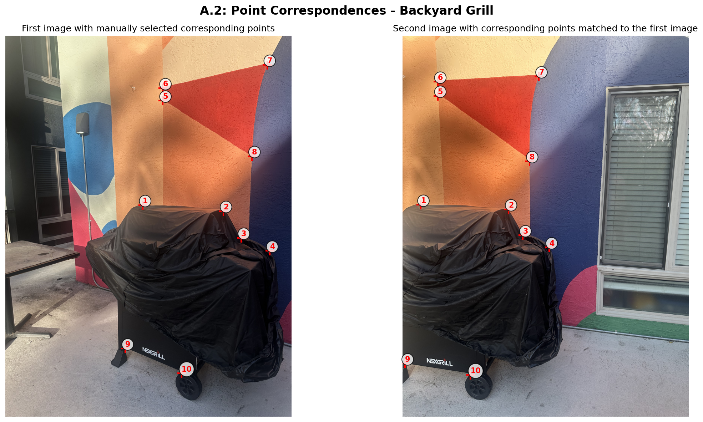
Point correspondences for the backyard grill scene.
Homography Matrix H₃
⎡ 1.526998e+00 6.116070e-02 -2.093398e+03 ⎤
⎢ 3.171814e-01 1.359206e+00 -6.476913e+02 ⎥
⎣ 1.744651e-04 2.456696e-06 1.000000e+00 ⎦Part A.3: Image Warping and Rectification
With the homography matrix computed, the next step is to warp the images into alignment. To avoid
holes
or aliasing artifacts in the output, I used inverse warping. Instead of mapping
pixels
from the source to the destination, this method iterates through each pixel in the destination
image,
applies the inverse homography (H_inv) to find its corresponding location in the source
image, and then samples the color from that location.
Interpolation Methods
Since the source coordinates rarely fall on an exact pixel, an interpolation method is needed. I implemented two from scratch:
warpImageNearestNeighbor(im, H): This method is fast and simple. It rounds the calculated source coordinates to the nearest integer and copies the pixel value. While efficient, it can lead to blocky or pixelated results.warpImageBilinear(im, H): This method produces smoother results by taking a weighted average of the four pixels surrounding the calculated source coordinate. The weights are determined by the coordinate's fractional distance to each of the four neighbors. This comes at a higher computational cost.
Image Rectification
A practical application of homography and warping is image rectification. This process transforms an image to correct for perspective distortion, making objects appear as if they were viewed from a frontal-parallel viewpoint. I took photos of rectangular objects (a monitor and a wooden cube), manually selected their four corners, and defined a target rectangle. By computing the homography between these two sets of points and warping the image, I was able to "flatten" the objects.
Rectification Example 1: Monitor
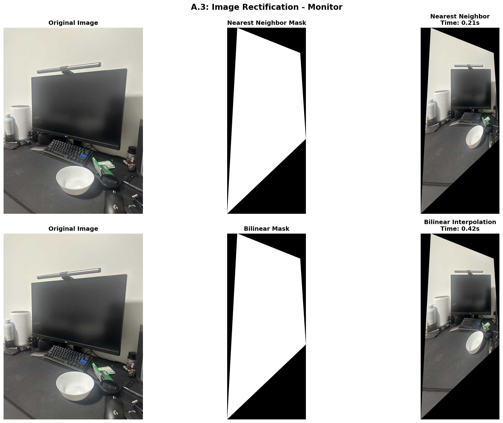
Comparison for Monitor Rectification. NN: 0.21s, Bilinear: 0.42s.
Rectification Example 2: Cube Block
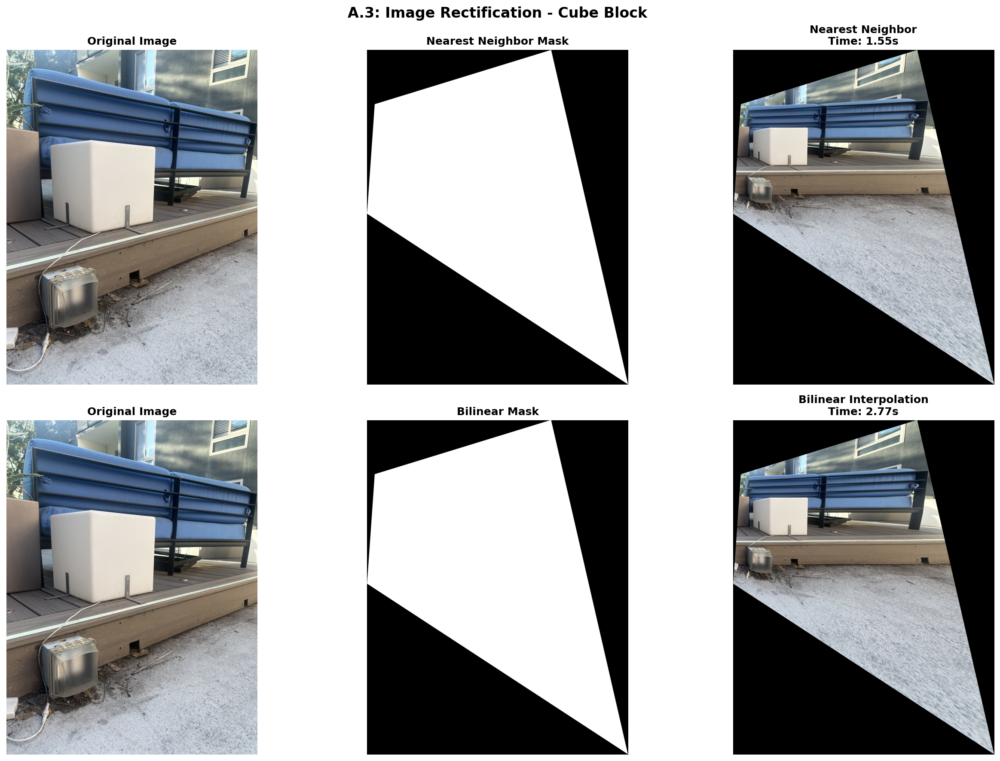
Comparison for Cube Block Rectification. NN: 1.55s, Bilinear: 2.77s.
Performance Comparison
As expected, Bilinear Interpolation was consistently slower than Nearest Neighbor roughly twice as slow in these examples. However, it produces noticeably smoother and higher-quality results, reducing the jagged edges that are sometimes visible with Nearest Neighbor. For applications like mosaicing where visual quality is key, the extra processing time for bilinear interpolation is a worthwhile trade-off.
Part A.4: Image Mosaicing
The final step is to combine all the previous parts to create panoramic mosaics. My approach was to keep one image fixed as a reference and warp the other image to align with it using the computed homography. To avoid harsh seams in the overlapping regions, I implemented a blending technique known as feathering.
Blending Technique: Distance-Based Feathering
Instead of simple averaging, I used a more sophisticated weighted blending approach. My
create_alpha_mask(mask) function generates an alpha mask for each image where the alpha
value of a pixel is proportional to its distance from the nearest edge. This means pixels near the
center of an image have a weight of 1, and the weight smoothly falls off to 0 at the boundaries.
In the overlapping region, the final color of a pixel is the weighted average of the colors from
both
images, using these alpha masks. This creates a smooth and often imperceptible transition between
the
stitched images, as shown in the results below. The blend_mosaics(img1, img2, H)
function
orchestrates this entire process: calculating the final canvas size, warping the second image,
creating
the alpha masks, and blending them together.
Mosaic Results
Mosaic 1: Backyard
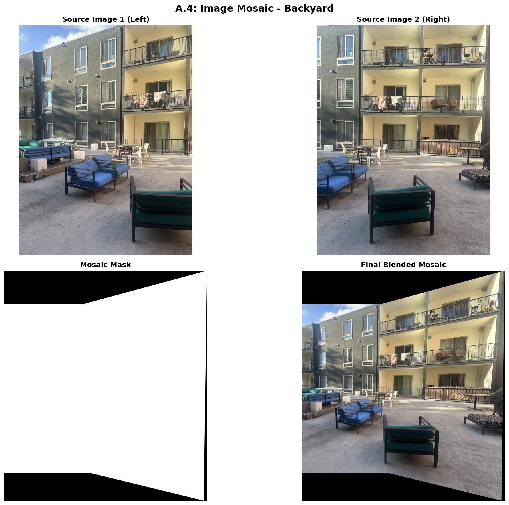
Final Blended Mosaic
Mosaic 2: Kitchen
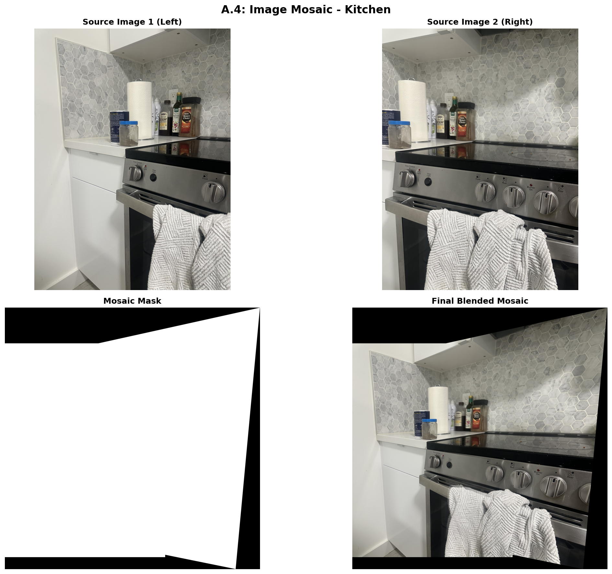
Final Blended Mosaic
Mosaic 3: Backyard Grill
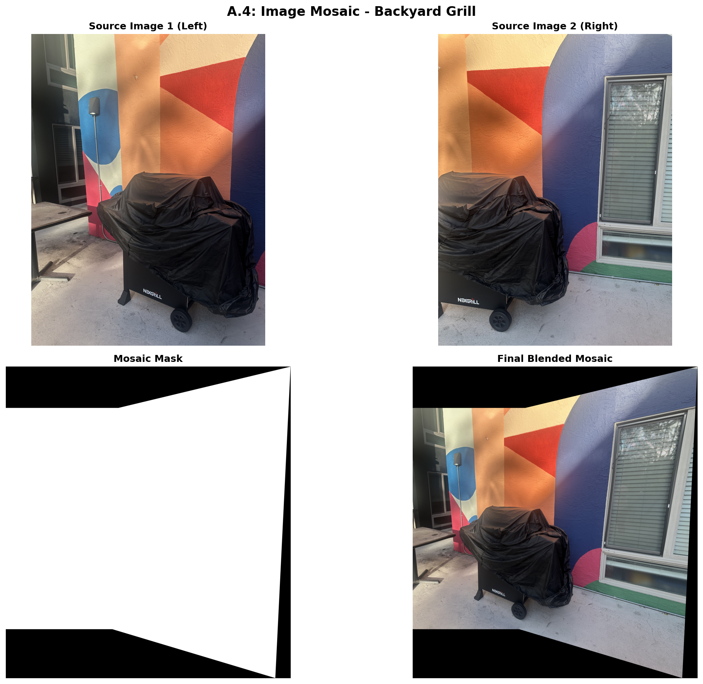
Final Blended Mosaic
Conclusion
This project was a deep dive into the geometric transformations that underpin computational photography tasks like panorama stitching. Implementing the entire pipeline from scratch, from computing homographies with least squares to writing my own image warping and interpolation functions, provided a solid understanding of the theory. The most satisfying part was seeing the final mosaics come together, where distinct images seamlessly merged into a single, cohesive panorama. It highlighted how a series of well-defined mathematical and algorithmic steps can create a result that is both technically impressive and artistically pleasing.
Part B: Automatic Feature Matching for Autostitching
In this part of the project, I implemented an automatic image stitching pipeline, following the paper "Multi-Image Matching using Multi-Scale Oriented Patches" by Brown et al., but with several simplifications. This system automatically detects key feature points, describes them, matches them between images, and uses a robust algorithm to compute the transformation needed to create a seamless panorama.
B.1: Harris Corner Detection & ANMS
The first step in automatic stitching is to identify a set of stable, repeatable interest points. I
used the Harris Corner Detector, implemented in the get_harris_corners function, to
find points with high intensity variation in all directions. Raw Harris detection, however, often
produces dense clusters of points in textured areas.
To get a more spatially uniform distribution of features, I implemented Adaptive Non-Maximal
Suppression (ANMS) in the adaptive_non_maximal_suppression function. For
each corner, this algorithm calculates a suppression radius, which is the minimum distance to
another corner that is significantly stronger (controlled by a robustness constant
c_robust = 0.9). By selecting the 500 corners with the largest suppression radii, we
ensure that the final points are strong but also spread out across the entire image, which is
critical for a stable homography calculation.
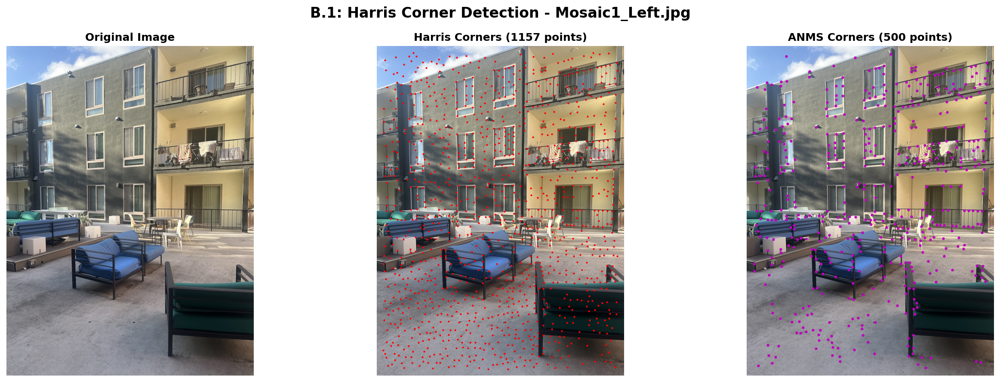
Left: Original Image. Center: All 1157 detected Harris corners. Right: 500 corners after ANMS, showing much better spatial distribution.
B.2: Feature Descriptor Extraction
Once interest points are identified, we need a way to describe the image patch around each point so
that we can find its match in another image. In my extract_feature_descriptors
function, I implemented the method from Section 4 of the paper. For each corner, a large 40x40 pixel
window is extracted. This large window is blurred with a Gaussian (σ=2.5) and then downsampled to a
compact 8x8 patch using bilinear interpolation.
This process creates a low-frequency descriptor that is robust to small localization errors. Finally, each 8x8 descriptor is bias/gain-normalized by subtracting its mean and dividing by its standard deviation. This makes the descriptor invariant to changes in brightness and contrast, allowing for more reliable matching between images.
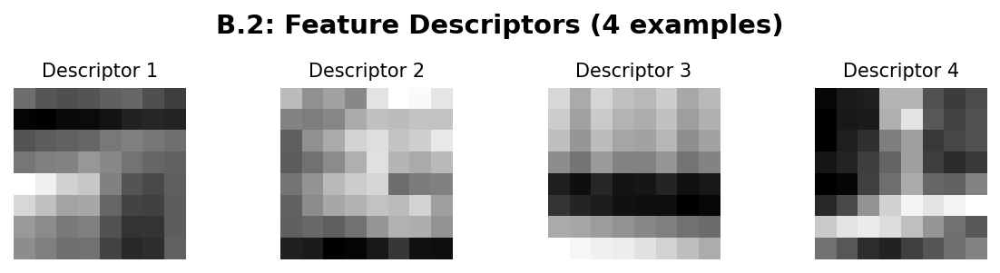
Four randomly selected 8x8 feature descriptors from an image. These 64-dimensional vectors represent the local appearance around a keypoint.
B.3: Feature Matching
With descriptors extracted for both images, the next step is to find corresponding pairs. My
match_features_symmetric function implements a robust matching strategy. For each
descriptor in the first image, it finds the two nearest neighbors in the second image based on L2
distance. A match is considered a potential candidate only if it satisfies Lowe's ratio test: the
distance to the nearest neighbor divided by the distance to the second-nearest neighbor must be
below a certain threshold (0.75). This filters out ambiguous matches.
To further improve robustness, a symmetric constraint is applied. A match (i, j) is only kept if feature i in image 1 matches feature j in image 2, AND feature j in image 2 matches feature i in image 1. This mutual agreement eliminates many false positives, leaving a cleaner set of correspondences for the next step.
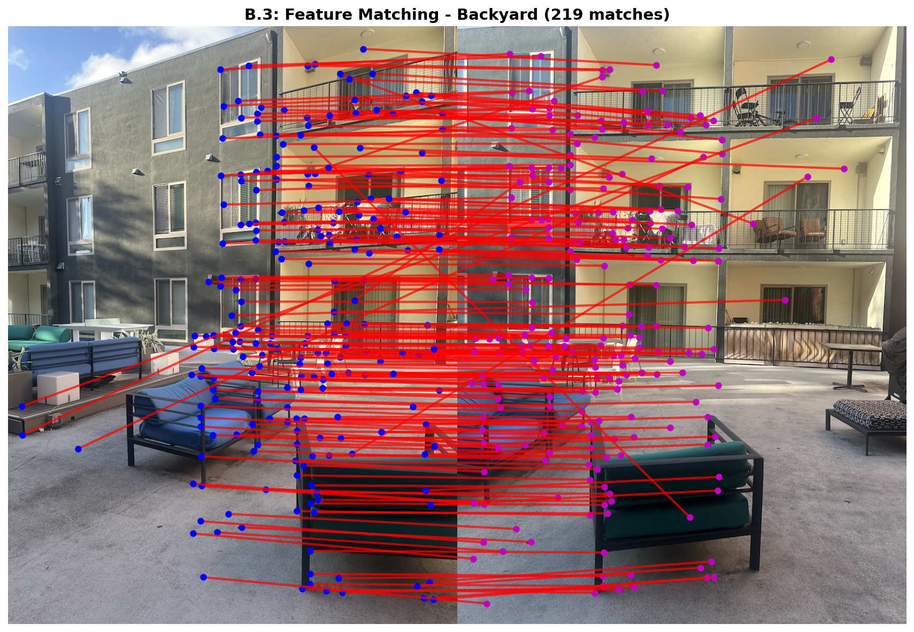
Backyard: 219 symmetric matches found.
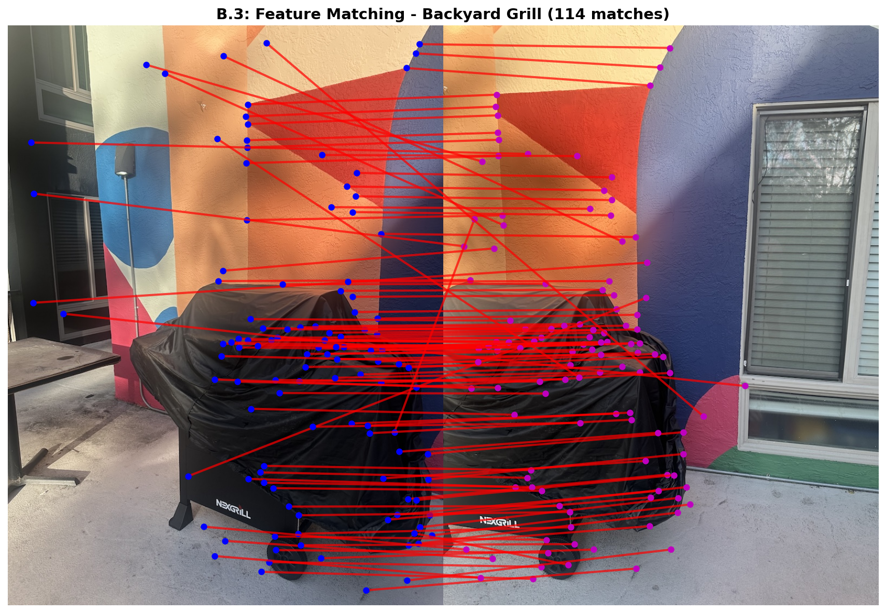
Backyard Grill: 114 symmetric matches found.
B.4: RANSAC for Robust Homography Estimation
The feature matches from the previous step still contain outliers (incorrect matches). To compute an
accurate homography, these outliers must be ignored. I implemented the RANSAC (Random Sample
Consensus) algorithm from scratch in my ransac_homography function. For
thousands of iterations (30,000), the algorithm randomly selects 4 point correspondences,
computes a candidate homography using the DLT method from computeH, and then counts the
number of "inliers" other matches that are consistent with this homography, within a given pixel
threshold (3.0 pixels).
The homography with the largest set of inliers is chosen as the best model. As a final refinement step, the homography is recomputed using all the inlier points from this best model, leading to a highly accurate and robust transformation. This process effectively isolates the geometrically consistent matches from the noise.
Automatic Mosaic Results
The final mosaics were created by warping the images with the RANSAC-computed homography and blending them with the same distance-based feathering as in Part A. The automatic method is not only faster but often produces more accurate alignments. Even with some initial outlier matches, the RANSAC algorithm is exceptionally effective at finding the true geometric consensus, resulting in a more precise alignment than is typically achievable with manual point selection.
Backyard: Manual vs. Automatic

Manual Mosaic (Part A)
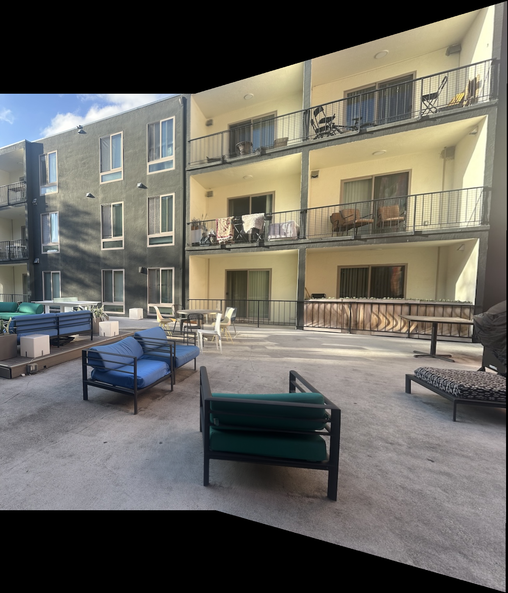
Automatic Mosaic (Part B)
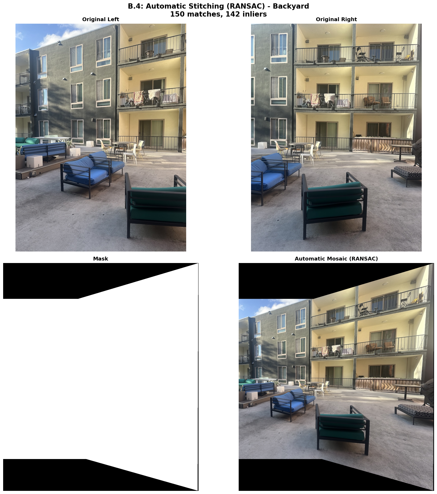
RANSAC Analysis: 498 initial matches -> 142/150 (94.7%) inliers found.
Kitchen: Manual vs. Automatic
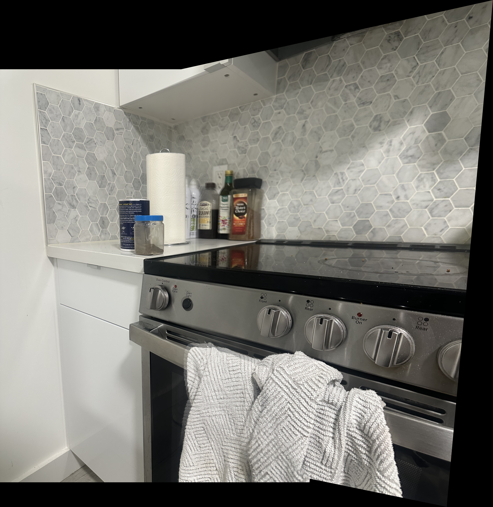
Manual Mosaic (Part A)
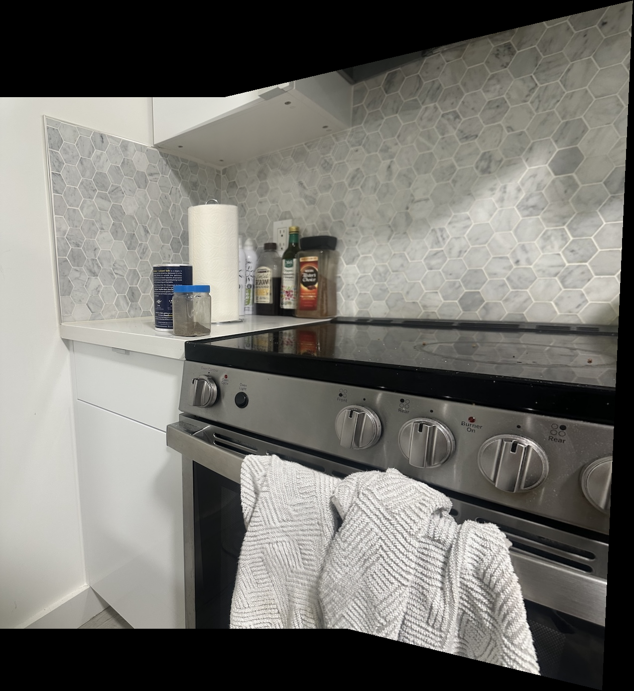
Automatic Mosaic (Part B)
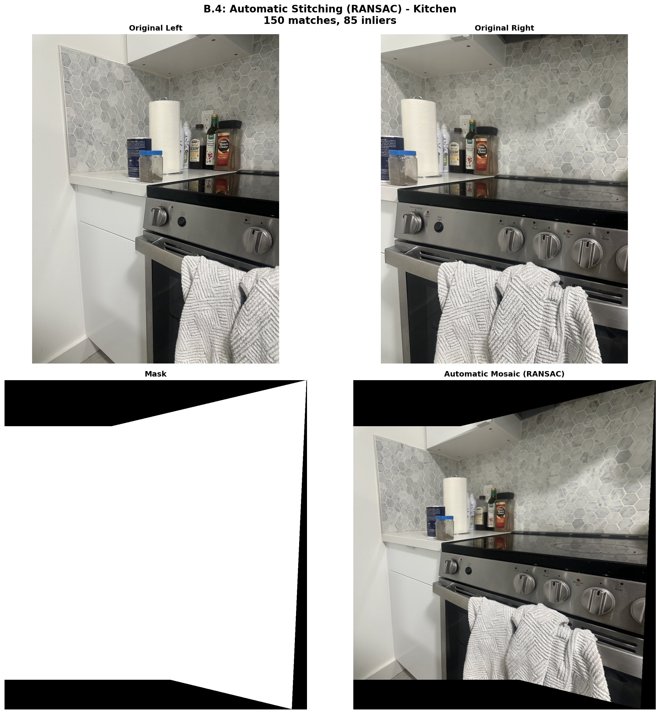
RANSAC Analysis: 334 initial matches -> 85/150 (56.7%) inliers found.
Backyard Grill: Manual vs. Automatic
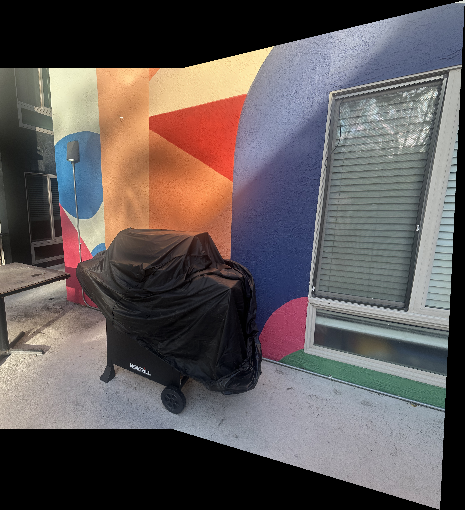
Manual Mosaic (Part A)
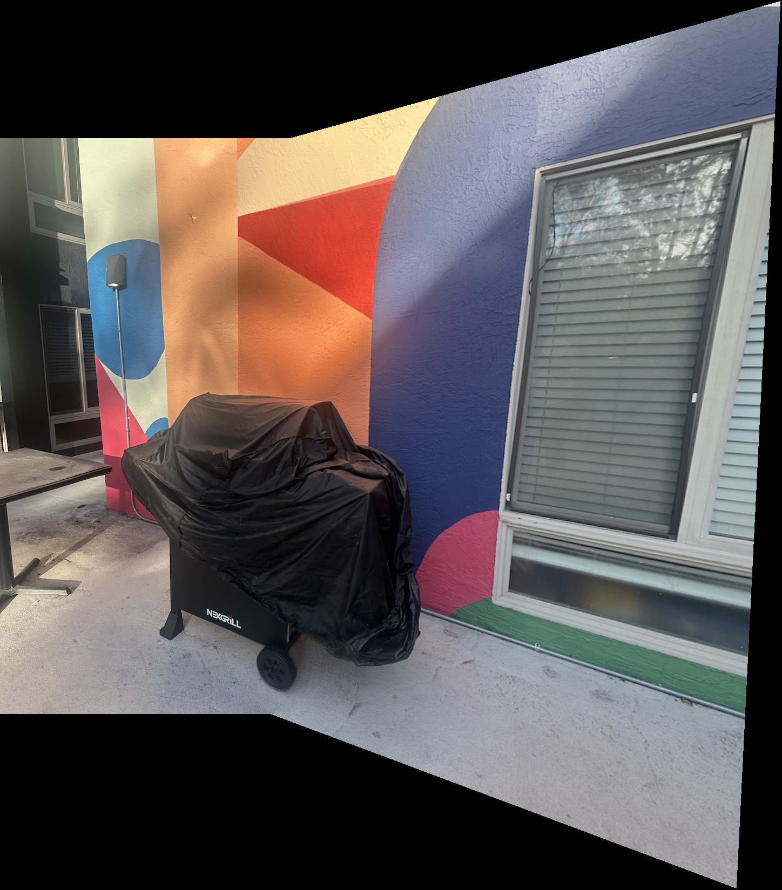
Automatic Mosaic (Part B)
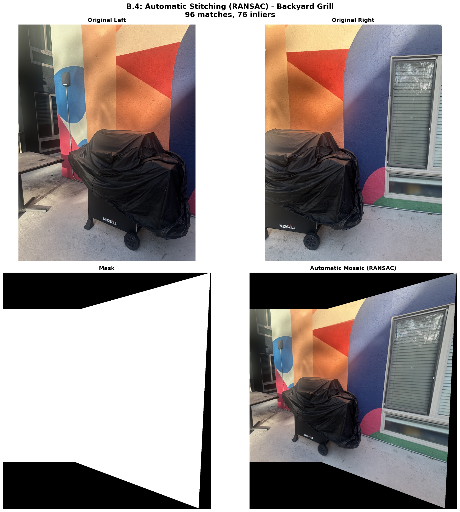
RANSAC Analysis: 96 initial matches -> 76/96 (79.2%) inliers found.